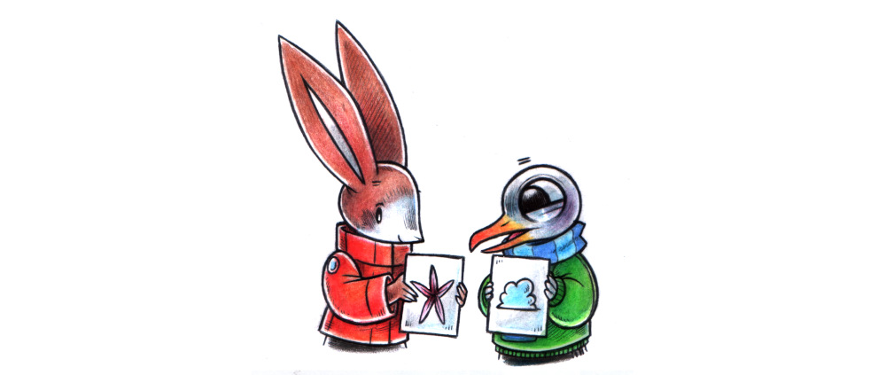

people have longed relied on ciphers to share secrets in a safe and private way.
Pen and paper ciphers, or hand ciphers, consist of 2 separate parts: the cipher, which determines how the message will be encrypted, and the key, which serves to scramble the message.
There are many types of ciphers out there, but our focus will be on transposition ciphers. With transposition ciphers, the ciphertext is a jumbled version of the original plaintext, all of the original letters are still there.
Types of transposition ciphers include: rail fence, scytale, columnar, etc...
Columnar Transposition Ciphers

columnar transposition ciphers work by rearranging the order of the letters according to a keyword, letters in that keyword are numbered in alphabetical order, then read off column by column starting with column number 1.
The letters in the original messages are still all there, but jumbled. The keyword defines the width of the rows, and the permutations of the columns.
For instance, the word Hazy has a length of 4, which means each will will span 4 letters, and the permutation of the letters is defined by their alphabetical order: 2143

to encrypt the following message: Meet me at 1700H at the beach. The first step is to pick a keyword: Starfish. Number each letters of the keyword according to which comes up first in the alphabet: For Starfish, the order is 68152473. In starfish, A would be assigned the number 1, F would get number 2 etc. If the keyword has more than one of the same letter(two a's for example), the left-most one gets the lower number. Example: Remember is numbered as 72536148.

Now fill the columns with the desired message.
The keyword orders the way columns are read and determines how many there are.
To create the encrypted message, go to column 1, and write down the letters under it, do the same for column 2,3, etc, combining them in groups of 5.

For a double transposition cipher, choose a second keyword, it will scramble the letters again, making for better ciphertext.
Assign numbers to it using the above method and fill the columns with the ciphertext generated from the first keyword.
Go to the column numbered as 1 and write down the letters under it, again, in groups of 5 (for readability).
This is the final doubly encrypted cipher text: eac1e hamh0 tth7b toaem eet

Lets reverse engineer the ciphertext used in the above example. The encrypted message is eac1e hamh0 tth7b toaem eet, the 2 keywords are starfish and cloud.
To decrypt the message, count the number of letters, this will help determine how many rows there are. The above ciphertext has 23 letters.

Number the letters of the second keyword in alphabetical order. Copy down the first letters of the message under 1, continue into 2,3 etc, until you run out of letters.


Next, copy the letters as they come from left to right, top-down.
Now you have the encrypted message from the first keyword: e0bmh attea ct0em 1hath e7e
repeat steps for the first keyword, the secret message will then be readable
Rail Fence

named after the way it is encoded, a railfence cipher works by writing plaintext diagonally across successive lines (or rails) and bounces away when hitting the top or bottom.
Plaintext: I am a rabbit
The text is read off from left to right.
Ciphertext: iriaa abtmb
Scytale

Similar to the rail fence cipher, but the way the text is encrupted differsin that it is read fromtop to bottom, progressing towards the right.
Plain text: we are rabbits
Ciphertext: weber iaatr bs
The sctyle cipher is based on the scytale, which is a baton with a strip of parchment wrapped around it. A message is written along the entire length of the strip.
The reader of the message has a baton with the same diameter to decipher it.
Plain text: This is a scytale!
Ciphertext: tstha aisls ceiy
Route Cipher

Disrupted transposition adds a layer of complexity to a regular transposition.
Plain text: this message is very secret.
Start a new row when the message reaches a column matching its row number.
Ciphertext: hsiee gmsrc eyrse tievs sta
Fractionation

Works by breaking up letters before transpositionning them, it is usually combined with other techniques.
The polybius square is often used to fractionate plaintext. Polybius squares allow for the plaintext to be represented by fewer symbols, which makes it useful for cryptography, telegraphy and stenography.

The polybius square divides the alphabet into 5 squares with 5 letters each, except for one shared by I and J. Each letter is represented by 2 numbers from 1-5. Thusly, 26 characters can be represented using only 5 numbers. It's possible to use a larger grid to fractionate cyrillic, or hiragana.

Lets re order the alphabet using a keyword, like rabbitwaves.
Use the keyword to fill the first 5 spaces, then fill the rest with the remaining letters of the alphabet with care not to reuse the same letter twice.

Plain text: a good wave
Fractionated: 21 33 44 44 13 12 21 22 32
Write the above string of numbers into the transposition grid.
The cipher text in numbers is: 12243 31323 42143 142
Using the polybius square, convert is back to letters. The final cipher text is: wmgdfslbs
 Iroha
Iroha
The iroha alphabet has 48 characters and requires a 7x7 grid (with a blank cell at the end) for fractionation.
The iroha is based on the word order of a famous poem of the same name. The iroha is a perfect pangram, containing each character once. It is a Japanese equivalent of ABCDE...
Straddling Checkerboard

this technique fractionates and compresses plaintext with some lettersof the alphabet becoming represented by 1 or 2 digits. The most used letters are assigned single digits.

The remaining gaps arefilled with the remaining letter of the alphabet in alphabetical order (not reusing letters), plus the 2 symbols "." and "/" (also possible to use FIG).
"." is used as a full stop, or as a decimal separator.
"/" or FIG, is used to indicate that numbers follow. Add "/" before and after.

Plain text: Y U M M Y C A R R O T S
Conversion: 66 62 29 29 66 21 0 9 9 3 1 7
In groups of 5: 66622 92966 21099 31700 (padded with zeros)
When converting the numbers back, separating the one digit numbers from the 2 digit numbers only involves finding numbers beginning with 2, or 6, the rest are all one digit.
Scrambling An Alphabet

It is possible to scramble an alphabet for use in a polybius square, straddled checkerboard, or to generate a complex transposition.
Say we use the keyword Lepore, using each letter once, one option is to fill the table with the rest of the alphabet(A), or to put spaces everytime a letter is reused(B).